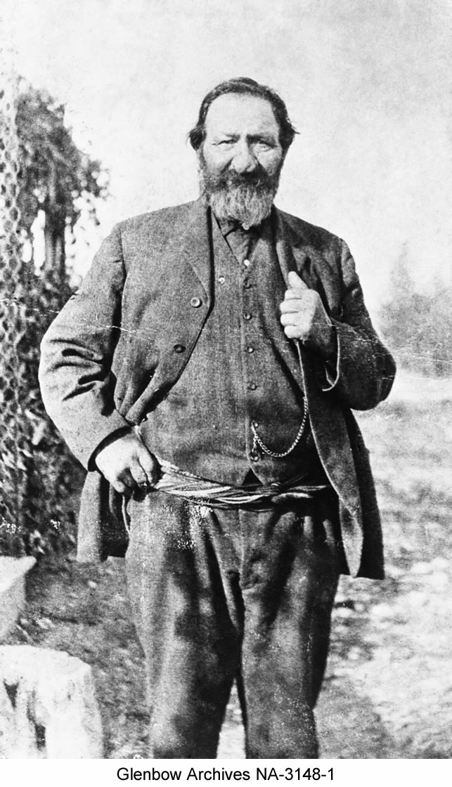
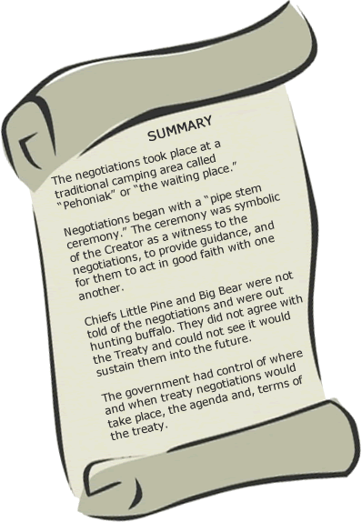

. “…what I will promise, and what I believe and hope you will take, is to last as long as the sun shines and yonder rivers flow.”
- Governor Alexander Morris
Negotiating the Terms: Friday August 18, 1876
|  |
| Peter Erasmus, Métis. Alberta |
For several days the Chiefs met and waited for others to arrive. The negotiations began at a traditional camping area the Cree’s called “pehonanik” or the waiting place, located a mile and half from the Fort (Stonechild and Waiser 12). The Queen’s representative, Alexander Morris, dressed in a cocked hat, blue uniform with gold braid and lace, was accompanied by the North West Mounted Police and treaty commissioner’s William J. Christie and James McKay. When they arrived at the council tent they hoisted the union jack - the flag of Britain. The First Nations assembled near the Chief’s tents, to the sound of beating drums and the discharge of small arms, singing, dancing, and loud speaking going on at the same time, as told by A.G. Jackes secretary to the Treaty Commisoner. (Christensen 234)
Pipe Ceremony
Once everyone was assembled at the Council tent, the “pipe stem ceremony” began with all the Chiefs, headmen, singers, and drummers. The bearer of the sacred stem “Wah-wee-kah-nich-ka-oh-tah-mah-hote” (the man you strike on the back) carried the decorated pipe stem, and walked slowly along the semi circle of people to the front. He raised the stem to the heavens, then slowly turned to the north, south, east, and west - presenting the stem at each point. The pipe stem was presented to the Governor and Treaty Commissioners where they stroked the stem. The ceremony ended with dancing, drums, and singing of the men and women in the background (Christensen 235). The significance of the ceremony was an invitation to the Creator to witness the proceedings and provide guidance; it also signified that it committed the participants into telling the truth. (Ray, Miller and Tough 133)
Language Difficulties
The Chiefs hired Peter Erasmus, a Métis, to interpret for them during the proceedings and his role became integral to both sides. The government had two interpreters; Reverend McKay, who knew Swampy Cree and Saulteaux, and Peter Ballenden, who was a good interpreter in small groups but did not do so well in large group settings. Governor Morris addressed the crowd and asked Erasmus to interpret for him, Erasmus answered back, “I act on behalf of the Chiefs; I am not employed by the government.” McKay translated but was stopped when Chief Mistawasis stood up and said “We are Plains Cree and demand to be spoken to in our language.” Then Ballenden proceeded to translate, however, people in the back of the crowd complained they could not hear him, he tried to speak louder, choked and then sat down (Ray, Miller, and Tough 134). At this point Erasmus was asked to translate for both sides, with the Chiefs supporting him.
In Morris’ address he described the government’s genuine concern for the welfare of their Indian brothers and sisters and asked them to take his words with much thought and to look to the future, “…what I will promise, and what I believe and hope you will take, is to last as long as the sun shines and yonder rivers flow.” (Stonechild and Waiser 15).